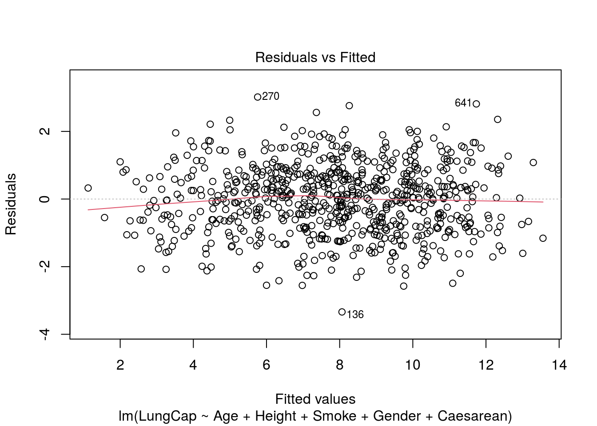
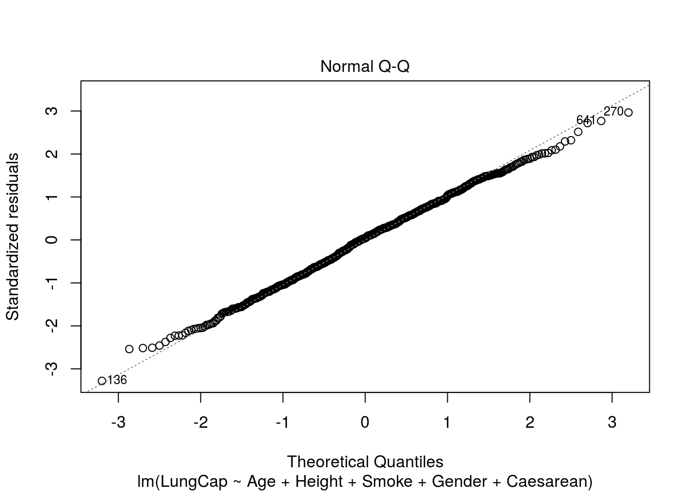
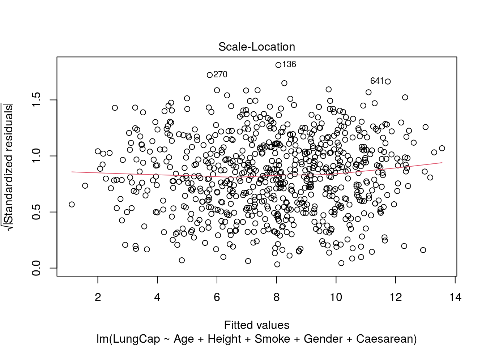
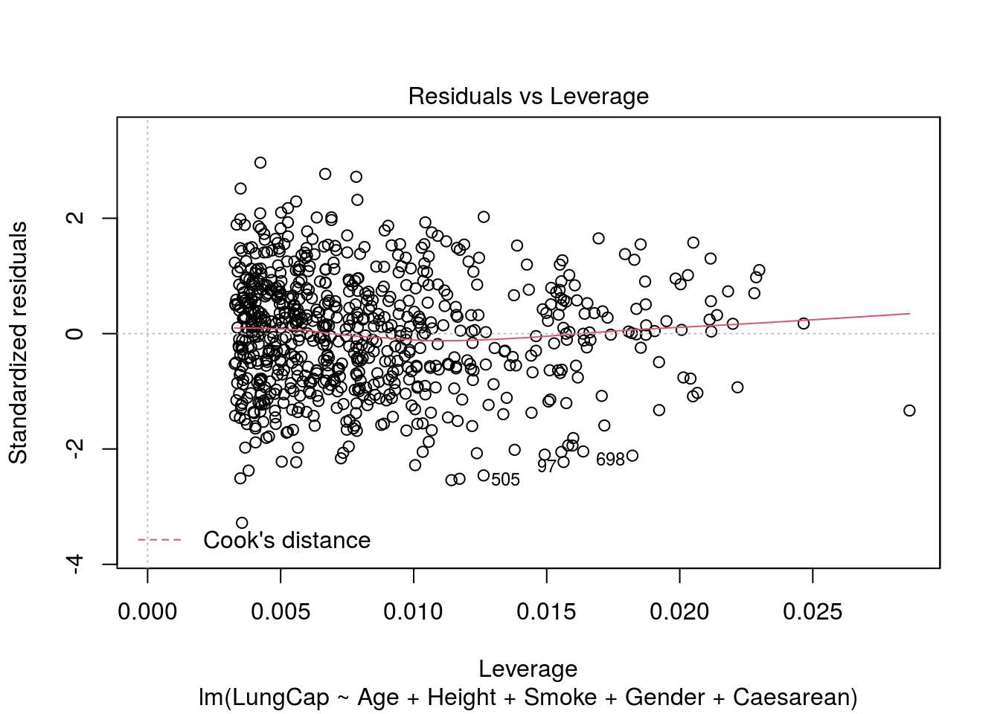

N Multiple Regression in R
by Doc P, 09 Jun 2020
Multiple Linear Regression (R Tutorial 5.3)
Simply put, multiple regression is a technique which allows us to use more than one predictor variable with a single predicted variable. Multiple regression is beyond the scope of this course but it is fairly easy to perform in R. These notes might come in handy if you ever take a more advanced statistics course and want to do a multiple regression analysis.
First, import and attach the LungCapData.
To perform a multiple regression we use the lm() command:
The command “model1 <- lm(LungCap ~ Age + Height)” tells R to create a model predicting lung capacity using Age and Height as the predictor variables, while “summary(model1)” will generate a summary. The item “Multiple R-squared” is generally the item of most interest. The F- statistic and p-value may also be of interest, as may be the Residual standard error.
model1 <- lm(LungCap ~ Age + Height)
summary(model1)##
## Call:
## lm(formula = LungCap ~ Age + Height)
##
## Residuals:
## Min 1Q Median 3Q Max
## -3.4080 -0.7097 -0.0078 0.7167 3.1679
##
## Coefficients:
## Estimate Std. Error t value Pr(>|t|)
## (Intercept) -11.747065 0.476899 -24.632 < 2e-16 ***
## Age 0.126368 0.017851 7.079 3.45e-12 ***
## Height 0.278432 0.009926 28.051 < 2e-16 ***
## ---
## Signif. codes: 0 '***' 0.001 '**' 0.01 '*' 0.05 '.' 0.1 ' ' 1
##
## Residual standard error: 1.056 on 722 degrees of freedom
## Multiple R-squared: 0.843, Adjusted R-squared: 0.8425
## F-statistic: 1938 on 2 and 722 DF, p-value: < 2.2e-16We can also conduct a Pearson’s r to test the relationship between Age and Height.
cor(Age, Height, method = "pearson")## [1] 0.8357368If this value is substantially different from zero it tells us that we should not assume the two variables to be independent.
Finally, we can determine a confidence interval for the relationship between age and height:
confint(model1, conf.level = 0.95)## 2.5 % 97.5 %
## (Intercept) -12.68333877 -10.8107918
## Age 0.09132215 0.1614142
## Height 0.25894454 0.2979192We can also create a model with more than two variables:
model2 <- lm(LungCap ~ Age + Height + Smoke + Gender + Caesarean) creates a model using all of the variables in the Lung Capacity date set.
summary(model2)##
## Call:
## lm(formula = LungCap ~ Age + Height + Smoke + Gender + Caesarean)
##
## Residuals:
## Min 1Q Median 3Q Max
## -3.3388 -0.7200 0.0444 0.7093 3.0172
##
## Coefficients:
## Estimate Std. Error t value Pr(>|t|)
## (Intercept) -11.32249 0.47097 -24.041 < 2e-16 ***
## Age 0.16053 0.01801 8.915 < 2e-16 ***
## Height 0.26411 0.01006 26.248 < 2e-16 ***
## Smokeyes -0.60956 0.12598 -4.839 1.60e-06 ***
## Gendermale 0.38701 0.07966 4.858 1.45e-06 ***
## Caesareanyes -0.21422 0.09074 -2.361 0.0185 *
## ---
## Signif. codes: 0 '***' 0.001 '**' 0.01 '*' 0.05 '.' 0.1 ' ' 1
##
## Residual standard error: 1.02 on 719 degrees of freedom
## Multiple R-squared: 0.8542, Adjusted R-squared: 0.8532
## F-statistic: 842.8 on 5 and 719 DF, p-value: < 2.2e-16will create a summary of this model. Be cautious with models containing many variables as the effect of non-independence can become problematic.
“plot(model2)” will create a series of scatterplots of the actual scores versus the predicted scores
plot(model2)
Once again, the use of multiple regression is well beyond the scope of our course. It is easy to do with R but can be difficult to interpret.